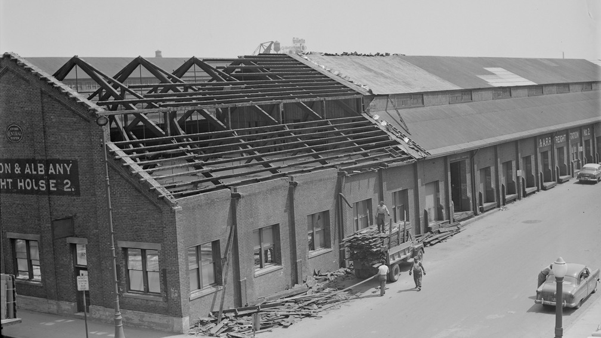
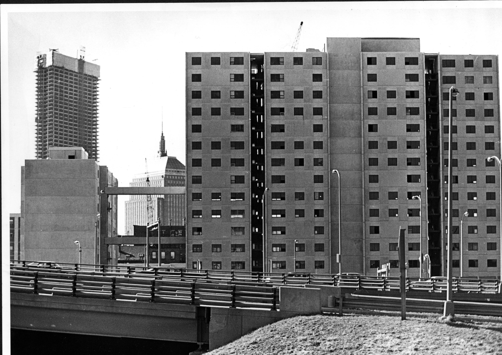

被遗忘的华埠
“当我们听说图书馆要被永久拆除的时候，我们都感觉非常难过。他们（波士顿重建局）把图书馆拆除了只是为了给边上的高速公路腾出空间，虽然最后图书馆的位置并没有被用作修建高速公路，”范奶奶说。
城市重建计划不仅仅带走了华埠的图书馆，更是把华埠分割的支离破碎。在城市改造计划中，华埠不少家庭被迫搬迁至阿斯顿(Allston)、布莱顿(Brighton)、布鲁克林(Brookline)、南端(South End)等别的地区。范奶奶说：“我们更难过的是，我们的邻居和朋友都因此被迫分开，大家住的越来越远。以前我们可以和伙伴们在华埠玩耍，而从那之后，我们再也不能一起玩耍了。”
在美国，无论公众求职、创业还是企业发展都需要通过图书馆获取相关信息。除了可以借阅图书和音像材料之外，图书馆还为移民提供语言文化学习以及入籍讯息服务。在美国16600所公共图书馆的任何一所里，读者都可以通过图书馆的服务获取问题答案、从事文娱活动、会见朋友同事，提高工作技能等，这些免费提供的资源价值数百万美元。

波士顿重建局为建造高速公路而将哈德逊街拆除。（图片由纽英伦华人历史协会提供。）

五十年代时波士顿重建局在华埠奥尔巴尼街(Albany Street)边进行的波士顿中心枢纽工程。（图片由Leslie Jones摄。）
波士顿公共图书馆是全美第一个政府支持的市立图书馆，也是全美最大的公共图书馆。它是美国第一个允许全市居民借阅书籍和其他材料，并把它们带回家使用的图书馆。作为全美公共图书馆的先驱者，在波士顿公共图书馆的二十余个分馆中，最需要社会服务和资源的华埠竟无一席之地。
“我在八十年代搬来波士顿，听到华埠竟然没有实体的图书馆的时候，我觉得这简直不可思议——那孩子们去哪里读书呢？”米尔顿中学(Milton Academy)的历史老师武淑威(Vivian WuWong)说。武的父母是从台湾搬来的移民。从小她在新泽西州和宾夕法尼亚州交接的樱桃山(Cherry Hill)小镇上长大，并常到镇上的图书馆去看书；对她来说，没有图书馆服务的波士顿华埠是近乎不可理喻的。
波士顿中心枢纽工程的建设对华埠的影响几乎是致命的——不但夺走了华埠的图书馆，还使得华埠的架构和居民分崩离析。然而华埠的人民并没有因这些不得已的搬迁、拆除而奋起反抗，而是悄无声息的度过了一年又一年。是因为华埠的人民不在意这个可有可无的图书馆？还是波士顿根本不在意无权无势的华埠？
现多伦多大学任教的阿蒂提·梅塔(Aditi Mehta)副教授曾在2010年麻省理工学院攻读城市规划博士学位时，对华埠图书馆进行过一个深度的学术研究。梅塔认为图书馆的有无很大程度上取决于当时的政府对于该地区的认知和分析，以及对城市改造的认识和理解。梅塔教授说：“图书馆并没有被当时的政府认为是现代化的象征。对于当时的决策者来说，华埠本身的城市改造和扩建才是社会现代化进步的关键所在。”
在1965年颁发的《移民和国籍法案》表示着1882年《排华法案》的正式废除。波士顿的华埠的华裔居民人数也直线上升。新移民的进入伴随着旧居民的迁出，为华埠带来了新的文化和力量，但同时也衍生了不少问题：住房、语言、文化、工人权利、反亚裔暴力等——而在其中，图书馆这种看似精神层面的需求，似乎被慢慢地掩盖。
梅塔教授解释道：“当时的华埠因城市改造工程遗留下了许多问题。当一个社区需要大量精力投放在解决住房、语言、工作等更加棘手的问题的时候，图书馆对于居民们就变得不再那么重要了。”
华埠对于图书馆运动的沉寂也造成了政府对于华埠社区真正需求的认知偏离。当时，华埠是混乱无序、肮脏贫穷的代名词，对于这样一个没有发展前途的社区，政府自然不会对它的建设改良加以重视。梅塔教授说：“政府建立图书馆的初心在于为移民们提供学习美国文化的场所，也是我所谓的‘同化中心’。当初心不在，蔓延在城市里的更多的是对于移民出于一种类似排外主义的恐惧——这个时候，华埠变得不重要，就像从地图上被抹去了一样。所有对于华埠的开发和改造，都是基于可以测量到的数据，而非社区真正的需求。”

城市改造计划项目之一的麻州高速公路延伸段位于华埠外围区域。(图片由波士顿环球报Phil Preston摄于1970年代)
波士顿华埠社区中心(Boston Chinatown Neighborhood Center)创始人、前任行政主任梅大卫(David Moy)曾在2010年对梅塔教授说：“没有人在华埠讨论图书馆，所以也没有很多人知道图书馆曾经存在过。对于不知道的东西，你就不会去想念——我以前就从来没有想过华埠需要有自己的社区图书馆。”
在华埠没有社区图书馆的62年里，波士顿公共图书馆对大部分的分馆都进行了不同程度的装修以及改造，而唯独没有将华埠图书馆列入规划蓝图。长久以来，尽管获取政府资金一直是改善基础建设的最大困难，但二十余个分馆的建设工作某种程度上意味着资金并不是华埠无法重建图书馆的最主要因素。对此，梅塔教授说：“我认为政府对于华埠的歧视是可能存在的。当财政紧张的时候，这些被缩减的资金自然将流向受过教育的人群，而非是贫穷的移民们。”